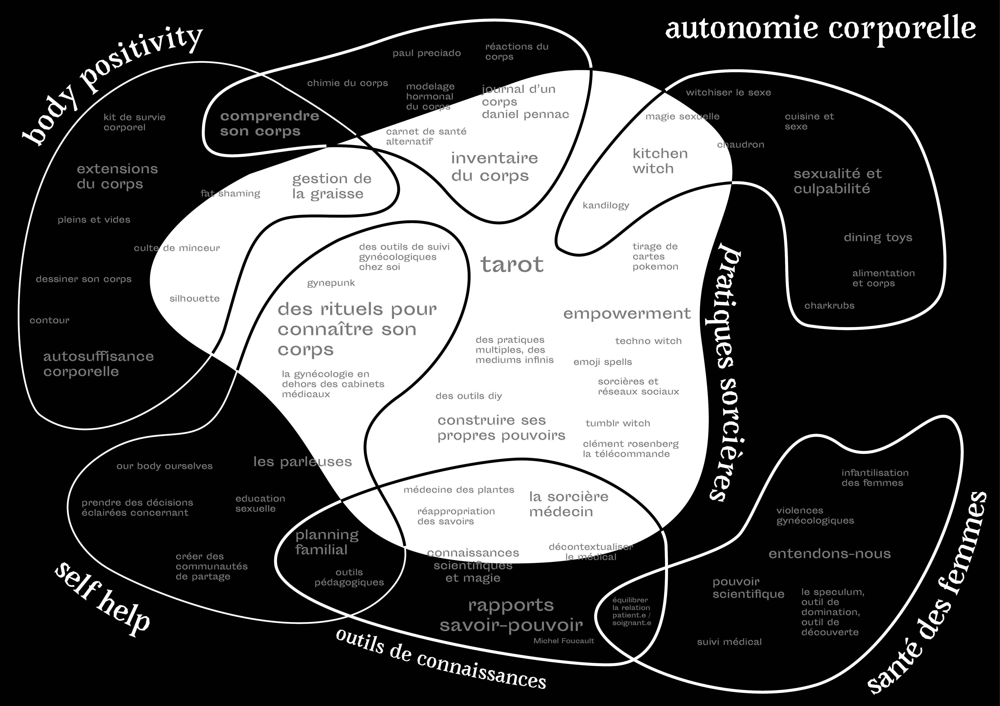

outils sorcellaires
réapropriation des savoirs sur le corps des femmes par un design sorcière
Aujourd’hui, les femmes manquent de connaissances sur leur corps et leur sexualité, ce qui les empêche de prendre des décisions éclairées concernant la gestion de la fertilité, les pratiques sexuelles etc; elles sont donc dépendantes de référents médicaux. La possession de connaissances a un impact direct sur la relation patient.e / soignant.e. De plus, ces connaissances sont cloisonnées dans les cabinets médicaux. Les médecins ont du mal à laisser l’information vivre en dehors du contrôle scientifique. Finalement, les savoirs scientifiques sont mystifiées; l’imaginaire collectif les estime complexes et non accessibles sans l’intermédiaire d’un professionnel.
Ainsi, je questionne ces problématiques au travers de l’étude de pratiques sorcières, comme outils de réappropriation des savoirs liés au corps et à la sexualité et de décloisonnement de ces savoirs.
recherche de mémoire-projet, 2017-2019
